해외 골프라고 하면 다낭·치앙마이·세부부터 떠올리곤 하는데, 이번엔 일행들 손에 이끌려 필리핀 클락(Clark)으로 3박 5일 골프여행을 다녀왔습니다. 5월 말이라 “이 시기에 무슨 해외 골프냐” 반신반의했는데, 막상 다녀오니 인천에서 직항 3시간 반이면 닿는 접근성에, 코스마다 결이 완전히 달라서 예상보다 훨씬 알찬 여행이었어요. 첫 라운딩은 평지가 시원하게 트인 로얄센트럴CC, 둘째 날은 산정에 올라앉은 디하이츠(구 썬밸리)CC, 마지막은 한반도·태극기 홀로 유명한 코리아CC까지 3색으로 돌았습니다. 이 글은 단순 자랑 후기가 아니라, 일정을 어떻게 짰는지·코스별 인상·이동·먹거리·비용·시즌·준비물·어떤 사람에게 맞는지까지 처음 가는 분이 궁금해할 만한 걸 다녀온 순서대로 정직하게 정리했습니다. 제가 직접 확인한 건 확인한 대로, 확인하지 못한 건 “확인 못 함”으로 솔직히 표기했으니 계획 세우는 데 참고하시면 좋겠어요.
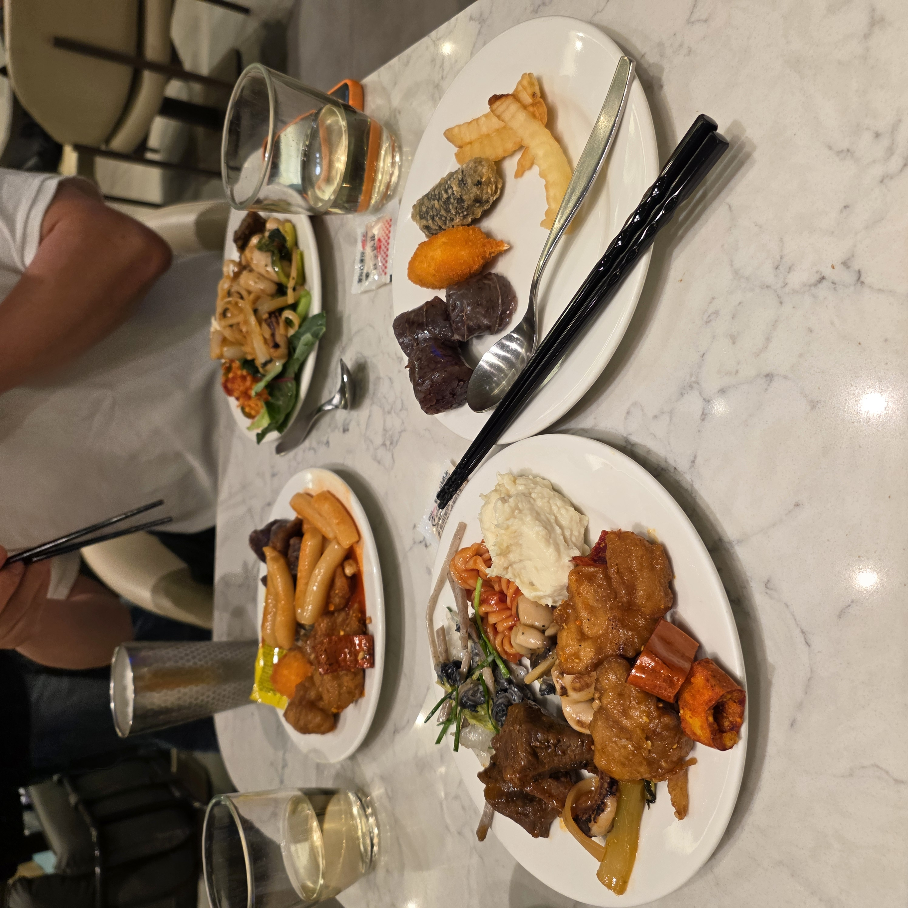
여러 후보지 중 굳이 클락을 택한 데는 실용적인 이유가 있었습니다. 첫째, 인천–클락 직항이 3시간 반에서 4시간이면 되어 몸이 덜 지칩니다. 골프여행은 도착 컨디션이 곧 스코어라, 이동이 짧다는 건 생각보다 큰 장점이에요. 둘째, 클락국제공항(CRK)에서 주요 골프장까지 대부분 차로 10~30분 거리라 하루의 상당 시간을 이동에 뺏기지 않습니다. 코스가 한 권역에 몰려 있어 매일 새 코스를 돌아도 동선이 빡빡하지 않았어요. 셋째, 클락 일대에는 한국계가 운영하거나 한국인 이용이 많은 코스가 여럿이라 캐디·식당·예약 소통이 편했습니다. 영어가 서툴러도 큰 불편이 없었다는 점이 일행 모두 만족스러웠던 부분이에요.
정리하면 클락은 가깝고, 코스가 모여 있고, 소통 장벽이 낮은 골프여행지였습니다. 화려한 관광보다 “라운딩에 집중하되 이동 스트레스는 최소화”하고 싶은 팀에게 잘 맞는 목적지라는 인상을 받았어요.
저희 일행이 실제로 소화한 일정을 표로 먼저 보여드릴게요. 3박 5일 안에 3라운드를 넣되 하루 한 코스씩 여유 있게 배치했고, 라운딩은 날씨 때문에 되도록 오전 티오프로 잡았습니다. 이동이 짧은 클락이라 이 정도 페이스가 무리 없었어요.
| 1일차 (5/30 토) | 인천 출발 → 클락 도착, 컨디션 조절 후 저녁 |
| 2일차 (5/31 일) | 오전 로얄센트럴CC 라운딩 – 평지·넓은 페어웨이로 몸풀기 |
| 3일차 (6/1 월) | 오전 디하이츠(구 썬밸리)CC 라운딩 → 초밥·산미구엘 → 저녁 스테이크 |
| 4일차 (6/2 화) | 오전 코리아CC 라운딩, 마지막 밤 짐 정리 |
| 5일차 (귀국) | 클락 → 인천 귀국편 (구체 스케줄은 항공편마다 상이) |
핵심은 “하루 한 코스, 오전 라운딩”이라는 리듬이었습니다. 오전에 치고 오후엔 식사·휴식으로 여유를 두니 여행 내내 지치지 않았고, 뒤에 설명할 오후 스콜(소나기)도 대부분 피할 수 있었어요.
도착 다음 날 첫 라운딩은 로얄센트럴 컨트리클럽이었습니다. 공항에서 차로 10~15분이라 아침이 여유로웠어요. 코스에 들어서자마자 느낀 건 페어웨이가 정말 넓다는 점이었습니다. 알아보니 이곳은 세계적인 코스 설계가 로버트 트렌트 존스(Robert Trent Jones)가 설계했고 최근 리뉴얼·확장이 진행 중이라고 하는데, 어쩐지 잔디 관리 상태가 깔끔하더군요.
지형이 대체로 평탄해서 여행 첫 라운딩으로 몸 풀기에 안성맞춤이었습니다. 티샷이 조금 휘어도 넓은 페어웨이가 받아주니 심리적으로 편했고, 그린도 과하게 어렵지 않아 스코어 욕심을 내볼 만했어요. 오랜 비행 뒤 첫날부터 험한 산악 코스를 만났다면 힘들었을 텐데, 순서를 잘 짰다 싶었습니다. 뒤에 이어질 산정 코스와 대비되어 “클락은 코스 편차가 크니 첫날은 순한 곳부터”라는 팁을 몸으로 확인한 셈이에요.
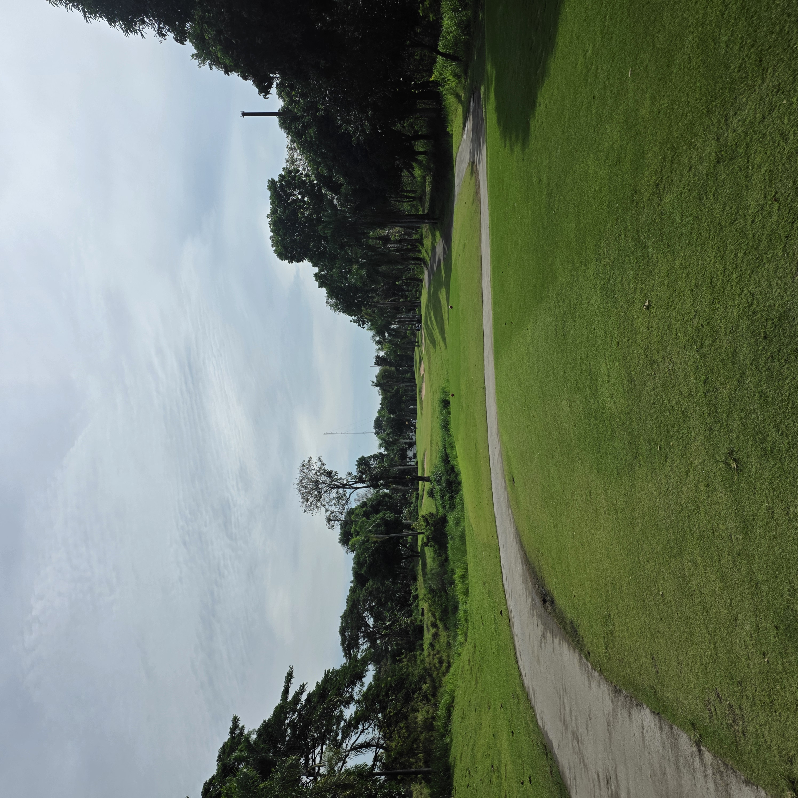
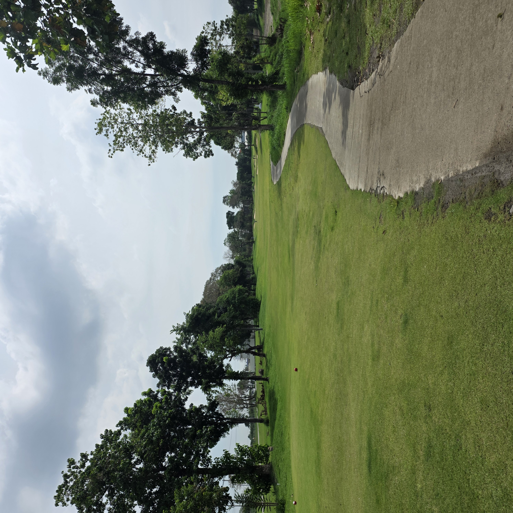
이번 여행에서 모두가 최고로 꼽은 곳은 단연 디하이츠 컨트리클럽이었습니다. 예전 이름이 클락 썬밸리(Clark Sun Valley)라 아직 그렇게 부르는 분도 많더라고요. 코스 한복판에 큼직하게 세워진 ‘D HEIGHTS’ 조형물 뒤로 산맥이 쫙 펼쳐지는데, 그 앞에 서니 일행 모두 감탄부터 나왔습니다.
이곳은 해발 약 370m 고지대에 자리해 클락 시내보다 공기가 확실히 선선했고, 피나투보 산맥과 아라야트 국립공원이 파노라마로 보이는 게 특징입니다. 실제로 홀마다 시야가 트여서 티박스에 올라설 때마다 스코어보다 사진부터 찍게 됐어요. 한국 썬밸리그룹이 운영하는 36홀(클락 코스·디하이츠 코스, 각 6,800yd대) 규모라 코스도 넉넉했습니다. 다만 평지였던 전날과 달리 고저차와 밸리형 홀이 있어 체감 난이도는 한 단계 높았어요. 풍경에 취해 스윙이 흐트러지기 쉬우니, 오히려 여기서 침착함이 필요했습니다.
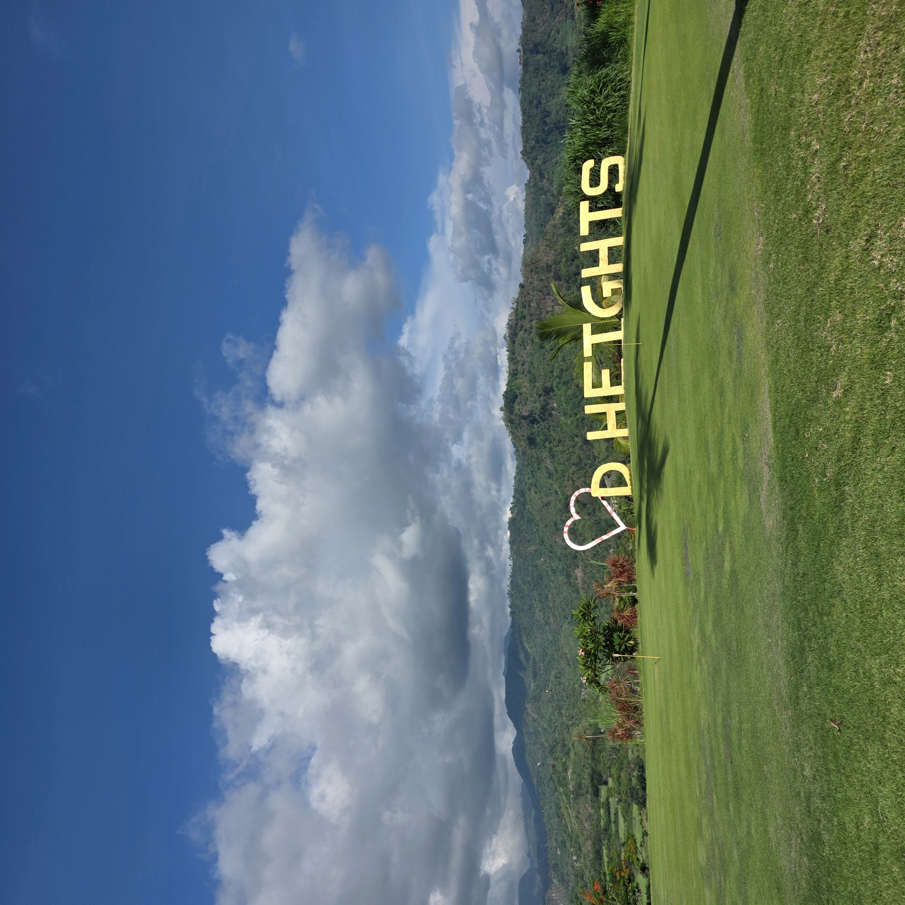
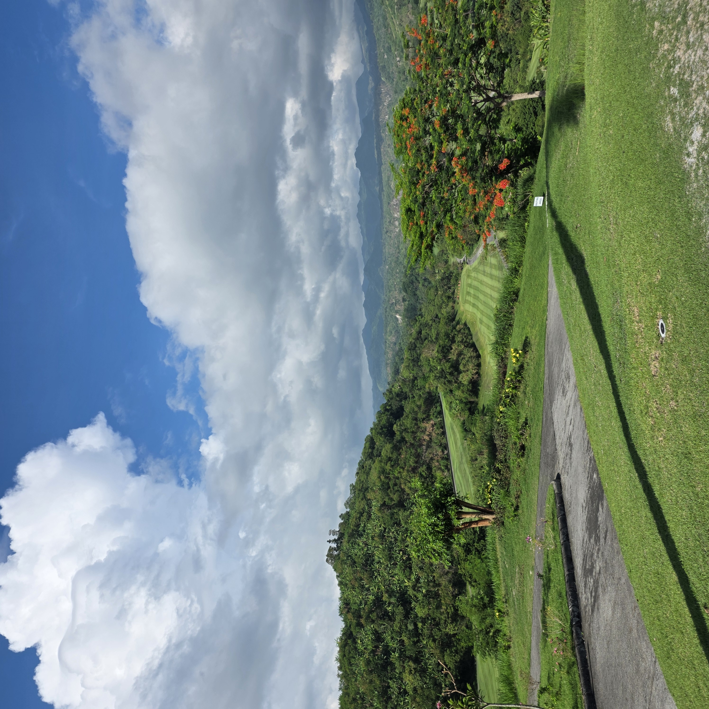
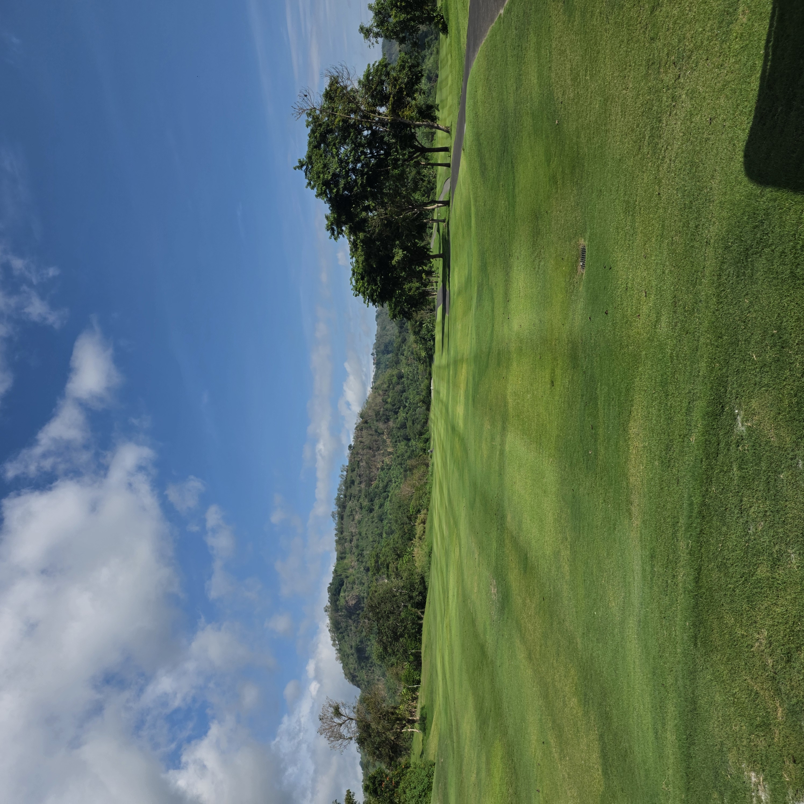
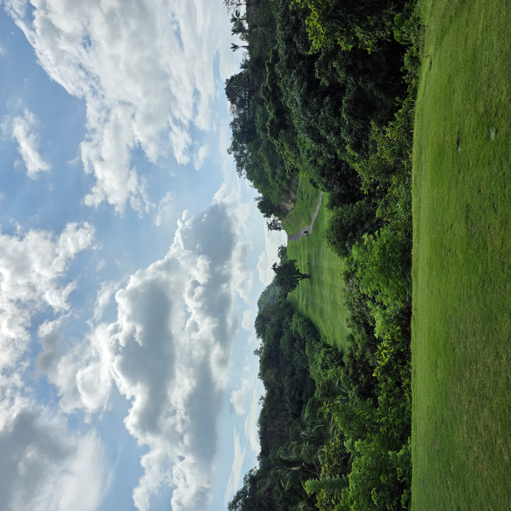
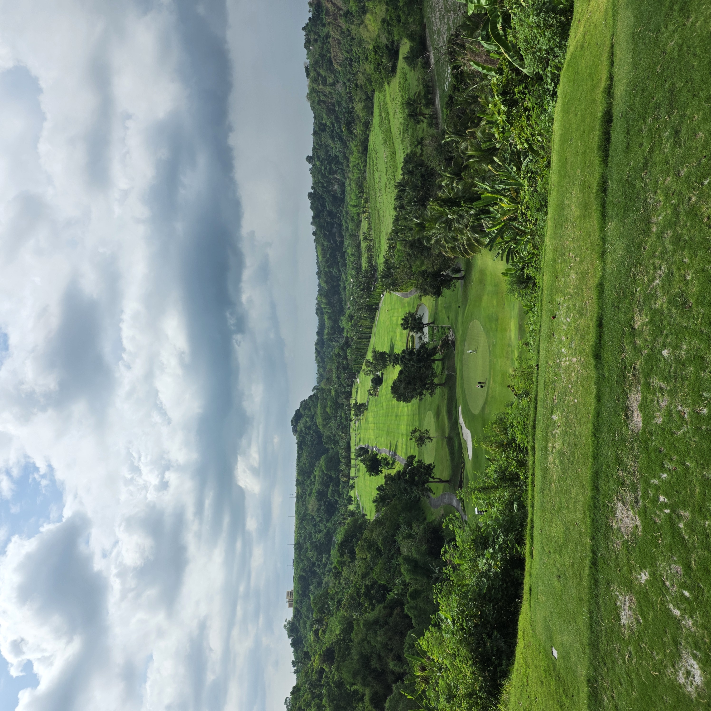
골프여행의 절반은 먹는 재미라고들 하죠. 디하이츠 라운딩을 마치고 초밥롤과 따끈한 메밀국수를 시켜 필리핀 국민 맥주 산미구엘(San Miguel)과 함께 먹었는데, 땀을 쏟은 뒤라 시원한 국물과 맥주 한 잔이 그렇게 개운할 수가 없었어요. 현지 물가 덕에 이 정도 한 상이 부담 없다는 점도 좋았습니다.
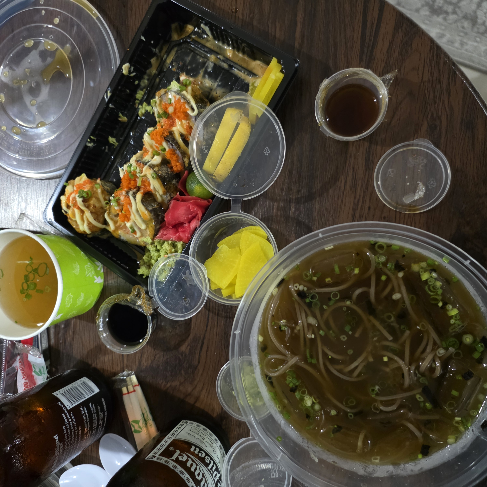
저녁은 클락 시내에서 돌판 스테이크로 제대로 즐겼습니다. 뜨겁게 달군 돌판에 두툼한 소고기를 구워 치미추리·후추 소스에 찍어 먹는데, 구운 마늘과 야채까지 곁들이니 하루 라운딩의 피로가 싹 풀렸어요. 일행끼리 “오늘 몇 타 쳤네” 하며 스코어를 복기하는 저녁 식사가 골프여행의 진짜 묘미인 것 같습니다. 라운딩–식사–복기로 이어지는 이 하루의 리듬이 클락 여행에서 가장 좋았던 부분이었어요.
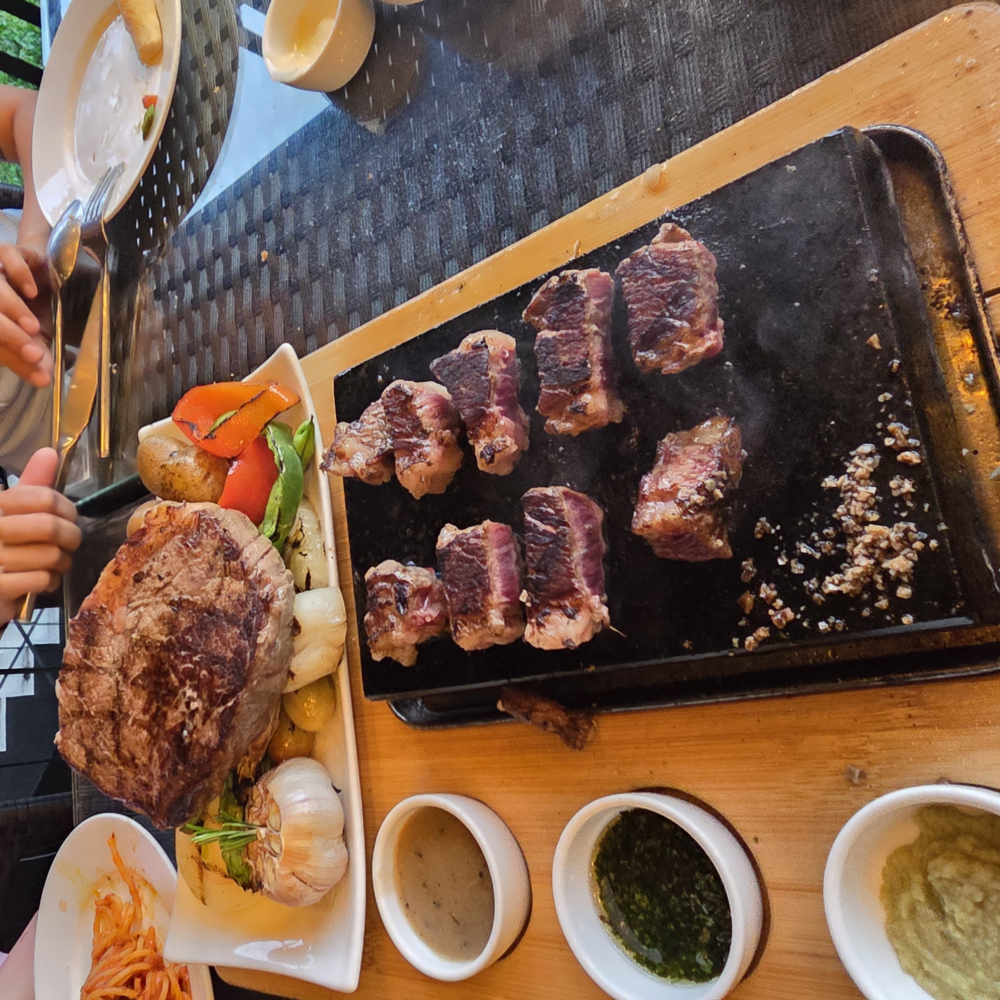
여행의 마지막 라운딩은 코리아CC였습니다. 정식 명칭은 폰타나 아폴론 코리아 컨트리클럽(FA 코리아 CC)이라고 하는데, 들어가는 길목부터 키 큰 로열팜(왕야자)이 가로수처럼 늘어서 있어 남국에 온 실감이 확 났어요. 저희가 돈 쪽은 마운틴 코스였고, 표지판에 홀 거리까지 큼직하게 적혀 있어 라운딩하기 편했습니다.
이 코스가 특별한 건 한국인이 설계·운영했다는 사연 때문입니다. 알아보니 16번 홀은 통일을 염원해 한반도 지도 모양으로 만들었고, 18번 홀 그린과 벙커는 태극기를 형상화했다고 해요. 필리핀 한복판에서 한반도 모양 페어웨이를 만난다는 게 묘하게 뭉클했습니다. 클럽하우스에 한국식 사우나까지 있어 마지막 날 몸을 풀기에도 좋았고요. 풍경으로 압도하는 코스는 아니지만 ‘이야깃거리’가 있는 코스라, 여행 마무리에 배치하니 여운이 남았습니다.
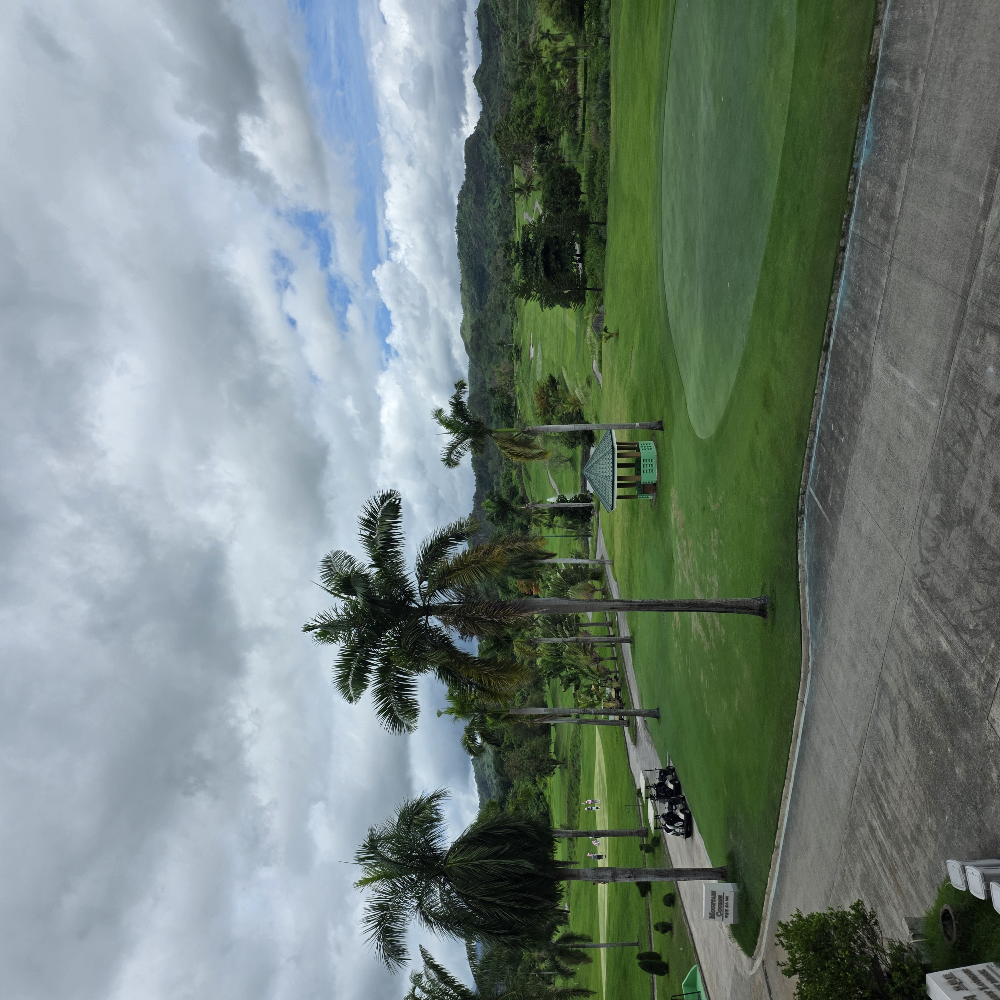
가장 궁금해하실 비용은 정직하게 적겠습니다. 저희처럼 항공·숙소·라운딩이 포함된 패키지로 잡으면 대략 3박 5일 80만 원대부터 시작하는 상품을 볼 수 있었는데, 이 금액은 시즌·항공권 가격·환율에 따라 크게 출렁이므로 그대로 믿기보다 예약 시점에 반드시 재확인하셔야 합니다.
여기서 솔직히 밝힐 점이 있습니다. 코스별 정확한 그린피, 캐디피·카트비·팁의 구체적인 금액은 제가 수치로 확인하지 못했습니다. 다만 확실한 건 캐디피·카트비·팁 등 현장 지출은 페소 현금으로 준비해야 편하다는 점이에요. 카드가 되는 곳도 있지만 팁이나 소액 결제는 현금이 매끄럽습니다. 그래서 페소를 넉넉히 환전해 가고 부족분은 현지 ATM·환전소를 이용하는 걸 권합니다. 정확한 요금은 각 골프장이나 여행사에 문의하는 게 가장 정확하니, 이 글의 숫자는 “범위 참고”로만 봐 주세요.
클락 골프의 성수기는 보통 건기(대략 11~5월)입니다. 그런데 저희가 간 5월 말~6월 초는 건기가 끝나고 우기로 넘어가는 길목이라, 오전엔 파랗게 맑다가 오후에 스콜(소나기)이 한 차례 쏟아지는 패턴이 잦았어요. 그래서 앞서 일정표에서 보셨듯 라운딩을 되도록 오전 이른 시간으로 잡았고, 실제로 오전 티오프는 거의 비를 맞지 않고 쳤습니다.
정리하면, 우기 초입(5~6월)에 가더라도 오전 티오프면 라운딩은 충분히 가능합니다. 반대로 오후 시간대는 비 확률이 올라가니 피하는 게 안전해요. 고지대인 디하이츠는 아침 공기가 특히 선선했는데, 저지대 코스라도 한낮엔 땀이 많이 나므로 여벌 옷과 수분 보충은 필수였습니다. 날씨 리듬만 이해하면 이 시기도 나쁘지 않은 선택이었어요.
직접 다녀와 보니 “이건 꼭 챙겼어야 했다” 싶은 것들이 정리됐습니다. 우선 여권은 유효기간 6개월 이상이어야 하니 출발 전 확인하세요. 다음으로 페소 현금 – 캐디피·팁·소액 결제에 계속 쓰입니다. 한낮 땀이 많으니 자외선 차단제·모자·여벌 옷은 넉넉히, 갑작스러운 컨디션 난조에 대비해 상비약도 챙기면 든든합니다. 스콜에 대비한 가벼운 우비나 우산도 배낭에 하나 넣어두면 마음이 편해요.
| 가는 법 | 인천–클락 직항 약 3시간 30분~4시간. 클락국제공항(CRK)에서 주요 골프장까지 차로 10~30분 |
| 추천 일정 | 3박 5일에 3라운드가 무난. 저희는 로얄센트럴·디하이츠·코리아CC로 3색 라운딩 |
| 시기·날씨 | 건기(약 11~5월)가 성수기. 5~6월은 우기 초입이라 오후 스콜 잦음 → 오전 라운딩 권장 |
| 현장 결제 | 캐디 동반·카트 이용이 일반적. 캐디피·카트비·팁은 페소 현금 준비(정확한 금액은 확인 못 함 → 골프장·여행사 문의) |
| 비용(참고) | 항공·숙소·라운딩 포함 패키지가 대략 3박 5일 80만 원대부터(시즌·항공권·환율에 따라 변동) |
| 준비물 | 여권(유효기간 6개월 이상), 페소 현금, 자외선 차단제·모자·여벌 옷, 우비, 상비약 |
추천하고 싶은 경우는 이렇습니다. ① 긴 비행 없이 가볍게 다녀오는 해외 골프를 원할 때(직항 3시간 반), ② 하루 한 코스씩 여유롭게 돌며 이동 스트레스를 줄이고 싶을 때, ③ 성향이 다른 여러 코스를 한 번에 경험하고 싶을 때(평지 로얄센트럴·산정 디하이츠·스토리의 코리아CC), ④ 영어가 부담스러워 한국계 코스의 편한 소통이 필요할 때입니다.
반대로 솔직히 참고할 점도 남깁니다. ① 저희가 간 5~6월은 우기 초입이라 오후 라운딩은 비 확률이 있습니다(오전으로 피하면 됨). ② 정확한 그린피·캐디피 금액을 제가 확인하지 못해 이 글로는 예산을 정밀하게 잡기 어렵습니다 — 예약처 확인이 꼭 필요합니다. ③ 디하이츠처럼 고저차 있는 코스는 풍경은 최고지만 초보에겐 체감 난이도가 있으니, 첫 라운딩은 평탄한 코스부터 잡는 게 좋아요. ④ 클락 자체는 화려한 관광지라기보다 골프·휴식 중심이라, 관광을 크게 기대하면 결이 다를 수 있습니다.
마지막 밤엔 숙소에서 짐을 싸며 SBS골프 채널을 틀었는데, 마침 국내 여자프로 대회 중계가 나오고 있었어요. 낮엔 필리핀 코스에서 직접 치고 밤엔 방에서 한국 골프 중계를 보고 있으니, 정말 골프여행 왔구나 싶더군요. 캐디백과 캐리어가 나란히 놓인 방을 보며 “내일이면 돌아가는구나” 하는 아쉬움에 잠이 잘 오지 않았습니다.
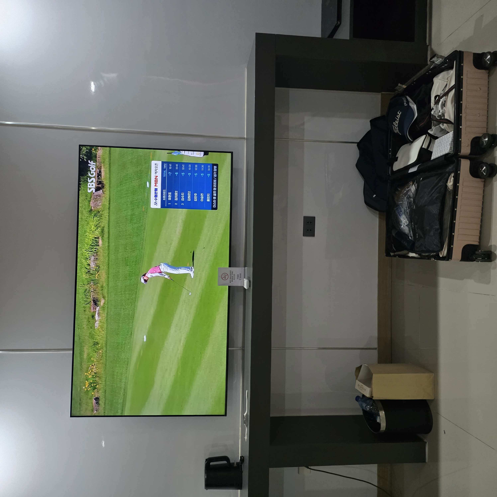
총평하자면 클락은 가깝고, 코스가 다양하고, 물가 부담이 적은 골프여행지였습니다. 특히 산으로 둘러싸인 디하이츠의 풍경은 한동안 잊히지 않을 것 같아요. 평지·산정·스토리라는 3색 코스를 하루씩 나눠 돈 구성이 지루할 틈을 안 줬고, 오전 라운딩으로 날씨까지 잘 피한 덕에 3박 5일이 알차게 채워졌습니다. 다음엔 비 걱정이 없는 건기(겨울)에 한 번 더 가서, 이번에 못 돈 코스와 레이크 코스까지 돌아보려 합니다. 클락 골프여행을 고민하는 분들께 이 글이 조금이나마 도움이 되면 좋겠어요.
Q. 필리핀 입국에 비자가 필요한가요?
관광 목적이면 한국인은 무비자로 30일까지 체류가 가능합니다. 다만 여권 유효기간이 6개월 이상 남아 있어야 하고, 입국 규정은 바뀔 수 있으니 출발 전 꼭 확인하세요.
Q. 초보나 여성도 라운딩할 만한가요?
네, 코스마다 캐디가 동반해 클럽·라인·거리까지 챙겨줘서 부담이 적었습니다. 로얄센트럴처럼 평탄하고 넓은 코스부터 시작하면 더 편하고, 고저차 있는 디하이츠는 감을 잡은 뒤 도전하는 걸 권합니다.
Q. 우기인 5~6월에 가도 라운딩이 되나요?
저희도 우기 초입에 갔는데 오전엔 대부분 맑았고 오후에 한 차례 스콜이 지나가는 패턴이었어요. 티오프를 이른 오전으로 잡으면 비 맞을 확률이 확 줄어듭니다.
Q. 환전은 얼마나, 무엇으로 하나요?
카드도 쓰이지만 캐디피·팁·소액 결제엔 페소 현금이 필요합니다. 넉넉히 환전해 가고 일부는 현지 ATM·환전소를 이용하면 됩니다. 다만 정확한 금액은 제가 확인하지 못했으니 예약처에 문의하세요.
Q. 세 코스 중 어디가 제일 좋았나요?
풍경은 디하이츠(구 썬밸리)가 압도적이었고, 편하게 스코어 내기엔 로얄센트럴, 이야깃거리(한반도·태극기 홀)로는 코리아CC가 좋았어요. 성향이 갈리니 3색으로 도는 구성을 추천합니다.
Q. 공항에서 골프장까지 얼마나 걸리나요?
클락국제공항에서 주요 골프장까지 대부분 차로 10~30분이었습니다. 로얄센트럴은 10~15분, 디하이츠는 15분 안팎으로 이동이 짧아 하루 한 코스 일정이 여유로웠어요.
| 로얄센트럴CC | 공항 10~15분, 로버트 트렌트 존스 설계, 넓고 평탄한 페어웨이. 첫 라운딩 몸풀기용으로 무난 |
| 디하이츠(구 썬밸리)CC | 공항 15분 안팎, 해발 약 370m 고지대 36홀, 피나투보 산맥·아라야트 조망. 풍경 최고·고저차 있음 |
| 코리아CC (FA 코리아) | 폰타나 아폴론 코리아 CC, 한국인 설계·운영. 16번 한반도·18번 태극기 홀, 클럽하우스 한국식 사우나 |